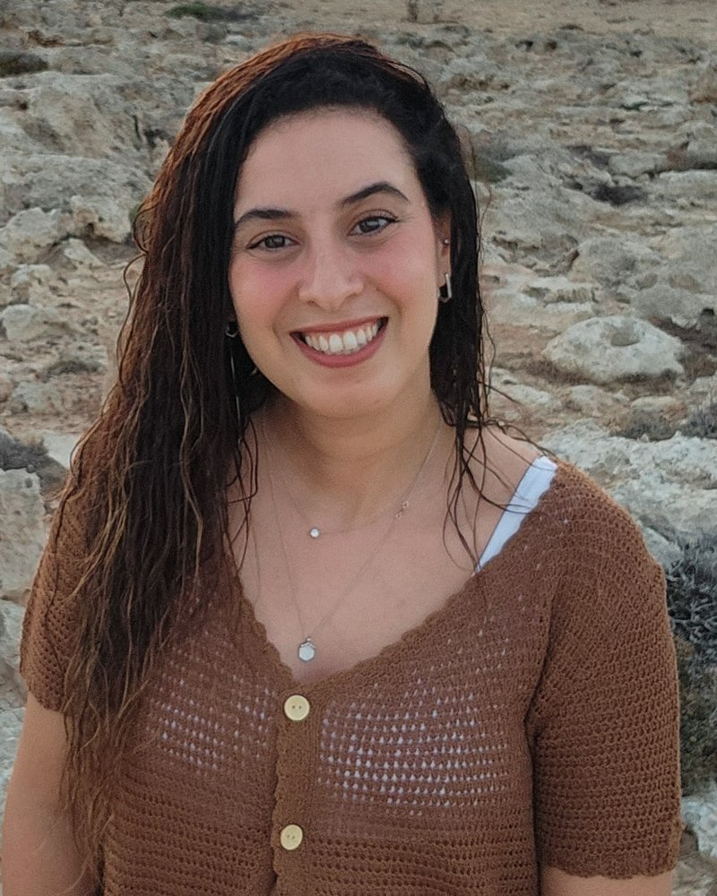

מורה ומחנכת בחינוך המיוחד כבר מעל 10 שנים.
נשמע מוכר? לחצו וספרו לי
הרגע שאני הכי אוהבת הוא כשילד מצליח במשהו שעבדנו עליו יחד, ולוקח את זה איתו לכיתה ולחיים. המטרה שלי היא שהוא יצא מהשיעור עם ביטחון ויכולות להתמודד עם כל אתגר. שיר

לפני שאנחנו מתחילים לעבוד יחד, אני לומדת את הילד: מה מעניין אותו, מה מלחיץ אותו ומה מקנה לו ביטחון.
לכל ילד מטרות ברורות שעליהן אנחנו עובדים במפגשים, ואתם ההורים מעודכנים כל הדרך: על מה עבדנו, מה הצליח וכיצד ממשיכים בבית.
חום וגבולות הולכים אצלי יחד. כשההורים ואני עובדים בשיתוף פעולה ומציגים חזית אחידה אל מול הילד, הוא מרגיש בטוח לנסות.
אני בת 34, אמא, מורה ומחנכת, וגרה בהוד השרון. בעלת תואר ראשון בחינוך מיוחד עם התמחות בהוראת המתמטיקה ותואר שני בחינוך מיוחד עם התמחות באוטיזם מאוניברסיטת בר־אילן.
במהלך השנים חינכתי כיתות שונות, וביניהן כיתות תקשורת. הובלתי צוות של סייעות, מרפאות בעיסוק ותרפיסטיות. היום אני מורת שילוב בחטיבת ביניים ומדריכה פדגוגית.
אחר הצהריים אני עובדת אישית עם ילדים, אחד על אחד, עד שהם צוברים ביטחון ומצליחים להתמודד עם כל אתגר באופן עצמאי ומיטבי. מול ההורים חשוב לי שנהיה צוות אחד: אני מקשיבה, מעדכנת וחושבת איתכם על הצעד הבא.
הודעה קצרה בווטסאפ, על הילד ועל מה שמעסיק אתכם.
ללא עלות, כדי להכיר ולהבין מה הילד צריך.
אני פוגשת את הילד, ובסוף המפגש אתם יוצאים עם תמונה ברורה: מה הוא כבר יודע, איפה הוא נתקע ומה אפשר להתחיל לעשות כבר השבוע בבית.
דברים קטנים שאפשר לעשות כבר השבוע בבית.
שאלה אחת לפני שפותחים מחברת: איך היה היום בהפסקה? מה שקרה שם משפיע על הלמידה יותר ממה שנדמה לנו.
כשהוא כועס או נעלב, שואלים: "מה היית רוצה להגיד לו?". ככה הוא לומד לבטא את עצמו בדרך נעימה.
כשהמחנכת מעדכנת על משהו שקרה, כדאי שתהיה לזה המשכיות בבית. ילד שרואה שהמבוגרים מתואמים ביניהם מרגיש בטוח.
ביסודי ובחטיבת הביניים. אני מלמדת היום בבית ספר ומכירה מקרוב את מה שנדרש מהילדים.
קריאה, כתיבה, מתמטיקה והרגלי למידה. ולצד זה ביטחון: לשאול כשלא מבינים ולנסות שוב ושוב. ילד שמרגיש בטוח לומד טוב יותר. לפעמים מה שמפריע ללמוד הוא בכלל לא החומר, משם מתחילים.
בשמחה. הורים שולחים לי לא מעט סיכומים והמלצות מבית הספר ומאנשי מקצוע. אני עוברת עליהם, מסבירה בשפה פשוטה על מה כדאי לעבוד ואיך, ואם צריך, אומרת גם לאיזה טיפול הייתי פונה.
אצלי בבית בהוד השרון, אחר הצהריים, לבד או בזוג עם ילד נוסף ברמה דומה.
שיחת היכרות ללא עלות